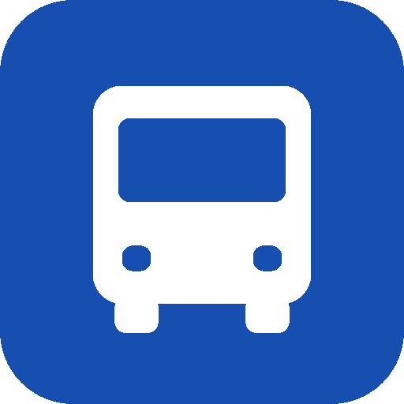

O que é, quem usa e como o dia funciona
A Prefeitura de Italva oferece transporte gratuito aos universitários que estudam em Campos dos Goytacazes e Itaperuna. Antes, a organização era manual: listas em papel, mensagens e contagem na hora. O sistema faz essa logística quase sozinho, todos os dias:
| Perfil | Onde usa | O que faz |
|---|---|---|
| Aluno | Celular (app) | Pede o passe, reserva ida e volta, lê o QR no ônibus, vê histórico, justifica faltas e pede troca de horário. |
| Motorista | Celular (app) | Vê as viagens do dia, a lista de quem embarca, marca presença manual (até sem internet) e encerra a viagem. |
| SEMEDUC | Computador | Secretaria de Educação: alunos, pedidos de passe, instituições, feriados, justificativas, trocas, faltas e relatórios. |
| SEMTRANSP | Computador | Secretaria de Transportes: ônibus, motoristas (CNH), pontos, viagens, escala, painel do dia, parâmetros e relatórios. |
| Administração | Computador | Cria os logins e senhas da SEMEDUC, da SEMTRANSP e dos motoristas, e consulta a auditoria completa. |
Cada perfil tem a sua própria página de entrada. Um CPF só entra pela página do seu perfil (o sistema avisa qual é a certa).
| Endereço | Para quem / para quê |
|---|---|
/aluno | Entrada do aluno (CPF e senha). |
/motorista | Entrada do motorista (CPF e senha). |
/semeduc | Entrada da Secretaria de Educação. |
/semtransp | Entrada da Secretaria de Transportes. |
/admin | Entrada da Administração (e-mail e senha). |
/cadastro | Pedido de passe feito pelo próprio aluno (sem login). |
/primeiro-acesso | Primeira entrada do aluno aprovado. |
/continuar | Aluno vindo das planilhas antigas completa o cadastro. |
/instalar e /instalar/motorista | Páginas para instalar o app do aluno e o do motorista no celular (links para mandar no WhatsApp). |
/esqueci-senha | Recuperar a senha pelo e-mail cadastrado. |
transporteescolar-phi.vercel.app/aluno.Exemplo com a ida da manhã de terça-feira para Campos (saída 05:30, prazo 19:00 do dia anterior):
| Palavra | Significado |
|---|---|
| Viagem modelo | Uma linha da grade fixa: cidade, ida ou volta, horário, prazo e dias da semana. Ex.: "Campos manhã, ida, 05:30, segunda a sábado". |
| Viagem do dia | A viagem modelo numa data concreta (ex.: a ida de 05:30 do dia 02/12). É criada automaticamente. |
| Trecho | Ida e volta são separadas. Cada uma é uma viagem própria, com reserva própria. |
| Rotas liberadas | As idas e voltas que a SEMEDUC liberou para cada aluno. Só elas aparecem no app dele. |
| Reserva | O aluno avisa que vai usar aquela viagem. Uma ida e uma volta por dia. |
| Prazo | Horário limite para reservar ou cancelar. Depois dele, o botão fica inativo. |
| Escala | Quais ônibus e motoristas fazem cada viagem. A escala semanal é a rotina; o Painel do dia ajusta exceções. |
| Alocação | Em qual ônibus cada aluno vai embarcar (feita sozinha no fechamento do prazo, agrupando por ponto). |
| Ponto | Local de embarque ou desembarque. Em Italva embarcam as idas; nas cidades, embarcam as voltas. |
| Embarque | Registro de que o aluno entrou no ônibus: pelo QR code ou, em último caso, pelo motorista (presença manual com motivo). |
| Ocorrência | Problema na viagem (pane, atraso grave). Marcada pela SEMTRANSP, anula as faltas daquela viagem. |
O que o sistema confere sozinho, para todos os perfis
| Viagem (Campos) | Saída | Prazo de reserva e cancelamento |
|---|---|---|
| Ida manhã | 05:30 | 19:00 do dia anterior |
| Ida tarde | 11:00 | 08:00 do mesmo dia |
| Ida noite | 16:30 | 15:00 do mesmo dia |
| Voltas (12:00, tarde, noite) | 12:00 / 18:15 / 22:00 | 10:00 / 15:00 / 15:00 do mesmo dia |
Os horários reais ficam em Viagens modelo e podem ser alterados pela SEMTRANSP. A tabela acima é o modelo inicial.
Cada ônibus tem um QR code fixo (adesivo dentro do veículo). Ao ler, o sistema confere:
| Situação ao encerrar a viagem | Resultado |
|---|---|
| Reservou a ida e não embarcou | Falta |
| Reservou a volta, embarcou na ida do mesmo dia e não embarcou na volta | Não retornou (sem penalidade, serve de alerta) |
| Reservou a volta sem ter embarcado em ida no dia e não embarcou | Falta |
| Viagem marcada com ocorrência | Faltas anuladas |
| Justificativa aprovada pela SEMEDUC | Falta justificada |
As faltas só são registradas: não há bloqueio automático. Advertências são feitas pela secretaria, que pode anotar no histórico do aluno. Viagem não encerrada pelo motorista é encerrada sozinha 4 horas após a saída (parâmetro).
Viagem extra: quando vão dois ou mais ônibus para Itaperuna, um deles pode voltar às 20:30, desde que os que ficam consigam trazer todos às 22:00.
Feriado ou recesso geral lançado antes: as viagens daquele dia nem são criadas; lançado depois, as viagens que ainda não começaram são canceladas e os reservados avisados, sem falta. Dia sem aula de uma instituição: só os alunos dela não reservam, e reservas que já existiam são canceladas.
Tudo pelo celular: do pedido do passe ao embarque
/continuar e informe o e-mail ou telefone usado na planilha. Envie os documentos pedidos.O mais simples possível: lista, presença e encerrar
/instalar/motorista e ative as notificações.Secretaria de Educação: alunos, documentos e frequência
Entrada em /semeduc. O menu lateral pode ser recolhido; a trilha no topo mostra onde você está.
/cadastro e os alunos vindos das planilhas.| Relatório | O que mostra / para quê |
|---|---|
| Alunos ativos | Por instituição, curso e turno, com validade da matrícula. |
| Faltas por aluno (ranking) | Viagens, embarques, faltas, justificadas, não retornou e % de faltas. Quem mais faltou primeiro. |
| Matrículas vencendo | Vencidas, sem validade e vencendo em 15, 30, 60 ou 90 dias. Para cobrar renovação. |
| Uso real × rotas liberadas | Quem tem viagens liberadas e não reservou no período. Para limpar cadastros parados. |
Secretaria de Transportes: frota, escala e operação do dia
Entrada em /semtransp.
| Relatório | O que mostra / para quê |
|---|---|
| Ocupação média por viagem | Média de reservados, embarcados e lugares por viagem e dia da semana, com % de ocupação. Para ajustar a frota. |
| Previsão de lotação | Alunos com a viagem liberada × lugares da escala. Sobra negativa (em vermelho) = faltam lugares se todos forem. |
| Km rodado estimado | Ônibus que fizeram a viagem × km, mais o retorno vazio, com total. |
| Vencimentos da frota | CNH, vistoria e licenciamento vencidos ou vencendo em 15 a 90 dias. |
| Parâmetro | Padrão | Efeito |
|---|---|---|
| Abertura da reserva (dias antes / horário) | 1 / 00:00 | Quando a reserva abre. |
| QR: minutos antes / depois da saída | 60 / 30 | Janela em que o QR vale. |
| QR: distância máxima (metros) | 200 | Distância entre aluno e motorista. |
| Localização do motorista válida por (min) | 10 | Depois disso, o QR é aceito "sem verificação". |
| Encerrar viagem automaticamente após (horas) | 4 | Viagens esquecidas são encerradas e as faltas lançadas. |
| Lembrete de reserva (ativo / minutos antes) | sim / 60 | Aviso para quem ainda não reservou. |
| Volta 20:30: liberar a partir de / reservas até (min antes) | 120 / 30 | 18:30 e 20:00. |
| Justificativa de falta: prazo (dias) | 15 | Até quando o aluno justifica. |
| Troca de horário: até quantos dias à frente | 60 | Antecedência máxima do pedido. |
| Alertas de vencimento: dias antes | 30 | Quando CNH, vistoria e licenciamento entram nos alertas. |
Logins, senhas e auditoria completa
Entrada em /admin, com e-mail e senha.
O que acontece sozinho e como os dados são protegidos
| Rotina | Quando | O que faz |
|---|---|---|
| Criar viagens | Todo dia, 00:05 | Cria as viagens de 2 dias à frente com a escala semanal (não cria em feriado/recesso geral). |
| Fechar prazos | A cada 5 min | Fecha as viagens com prazo vencido, distribui os alunos nos ônibus e avisa "Seu ônibus". |
| Lembrete de reserva | A cada 5 min | 1 hora antes do prazo, avisa quem tem a viagem liberada e não reservou (no máximo um de ida e um de volta por dia). |
| Volta 20:30 | A cada 5 min | Às 20:00, cancela a 20:30 que não atingiu o mínimo e avisa. |
| Encerrar viagens esquecidas | A cada 30 min | Encerra viagens 4 h após a saída e lança as faltas. |
| Matrículas | Todo dia, 08:00 | Avisa quem vence em 15 dias e quem venceu. |
| Envio de notificações | Na hora (e repetição a cada minuto) | Cada aviso gravado vira notificação nos celulares inscritos. |
| Aviso | Para quem |
|---|---|
| "Seu ônibus: prefixo X" e troca de ônibus | Aluno reservado |
| Ônibus no ponto (1º embarque de cada ponto) | Quem está no ônibus e ainda não embarcou, do ponto em diante |
| Viagem cancelada, com ocorrência ou dia sem transporte | Alunos reservados (e motoristas, no cancelamento) |
| Volta 20:30 liberada, confirmada ou cancelada | Alunos da volta 22:00 / que reservaram a 20:30 |
| Lembrete de reserva | Aluno com a viagem liberada e sem reserva (pode desligar) |
| Justificativa e troca aprovada/recusada | Aluno |
| Matrícula vencendo / vencida | Aluno |
| Escalado/retirado, lista fechada, viagem cancelada | Motorista |
| Pedido de passe aprovado/recusado | Aluno, por e-mail (ainda não tem o app) |